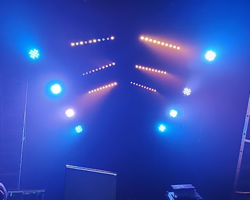

For the leadup to the Christmas party for 2024 i was assigned to run all the video and projection material. This included creating a custom video for the main stage, which was projected onto a large screen behind the stage. additionally, I animated a custom video (as seen in the video above) that was played on a loop in the foyer between sets. I ended up learning both animation and video editing software to create these videos, which was a great experience for me and a skill i have continued to develop.

During the setup to the event i had to route the video feed to run from FOH to the 6 different projectors around the building and the main screen behind the stage. This required me to set up a video server and configure the routing of the video feed to each projector. I also had to ensure that the video feed was synced across all projectors, which was a challenge due to no house tech being present but ultimately successful. This experience has given me a great understanding of video routing and server setup, and has allowed me to expand my skill set beyond just a basic understanding.
Even though I was not the lighting designer for this event, I did have to design the lighting for the DJ stage in the basement. This included creating a custom lighting design that used scafolding poles, as well as helping the Lighitng Operator understand and work with the rig to make use of its full potential. I had to work closely with the rest of the design team to ensure that the lighting design fit the overall theme of the event and created a cohesive look. This experience has given me a great understanding of how to work with other designers and how to create a cohesive design across multiple elements of an event.
Here you can see the lighting design with the DJ stage in the basement. The lighting design was created to fit the room and still compliment the rest of the events design with the subtly haloween theme I used that lights i had access to to make it appear as a rib cage.
